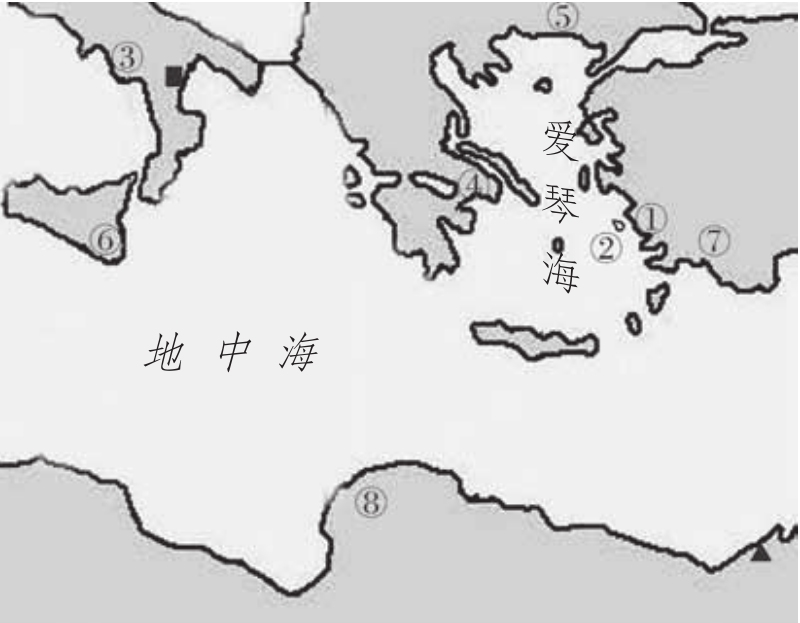
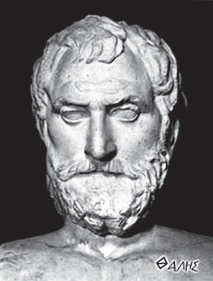
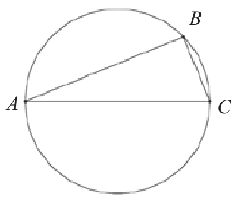
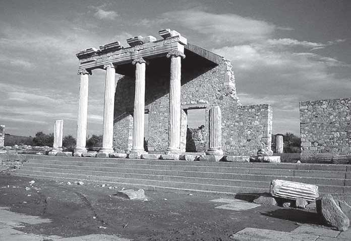
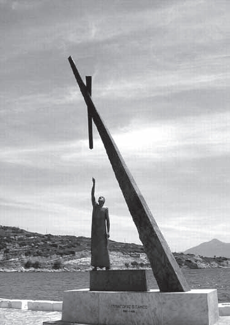
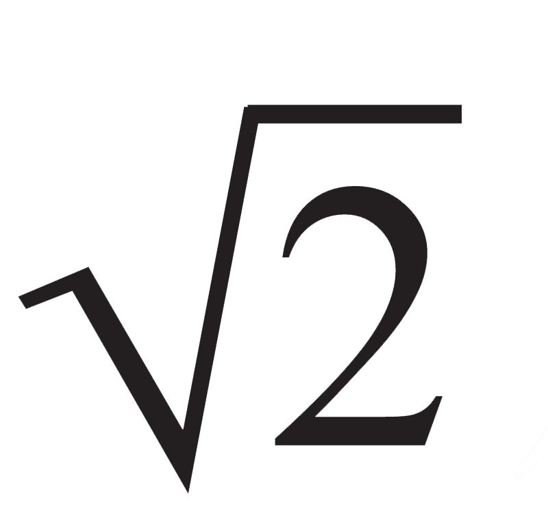
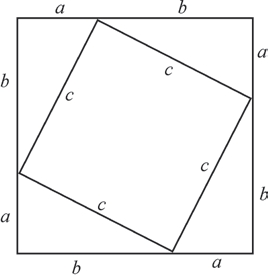
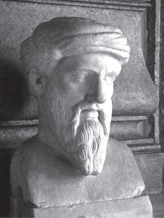

大约在公元前7世纪，在今天的意大利南部、希腊和小亚细亚（土耳其亚洲部分的西部）一带兴起了古希腊文明，它在许多方面不同于上一章讲述的古埃及和古巴比伦文明。按照英国作家韦尔斯（H.G.Wells，1866—1946）的说法，巴比伦和埃及经过了长期的发展，从原始农业社会开始，围绕着庙宇和祭司缓慢地成长起来；而游牧的希腊人是外来的民族，他们侵占的土地上本来就有农业、航运、城邦，甚至文字。因此，希腊人并没有产生自己的文明，而是破坏了一个文明，并在它的废墟上重新集合成另一个文明。也正是基于这个原因，当后来被马其顿人打败时，希腊人也能坦然接受，并把入侵者同化了。
一方面，正如罗素在谈及埃及人和巴比伦人时所言，宗教的因素约束了智力的大胆发挥。埃及人的宗教主要关心人死后的日子，金字塔就是一群陵墓建筑；而巴比伦人对宗教的兴趣主要在于现世的福利，记录星辰的运动以及进行有关的法术和占卜，也都是为了这个目的。可是在希腊，既没有相当于先知或祭司那样的人，也没有一个君临一切的耶和华的概念。游牧出身的希腊人有着勇于开拓的精神，他们不愿意因袭传统，而更喜欢接触并学习新鲜的事物。例如，希腊人把他们使用过的象形文字悄悄地改换成腓尼基人的拼音字母。
另一方面，每一个到过希腊的游客都会发现，这个国家的土地崎岖不平，贫瘠的山脉把国土分割开，陆路交通极为不便；没有通畅的河流和水网，仅有少量肥沃的平原。当无法容纳所有的居民时，有些人便渡海去开辟新的殖民地。从西西里岛、南意大利到黑海之滨，希腊人的城镇星罗棋布。既然有如此多的移民，返乡探亲和贸易往来便不可缺少，这样一来，定期航线就把东地中海和黑海的各个港口连接起来了。（这一现象一直延续至今，雅典与爱琴海岛屿之间的航线密布。）加上早先由于地震移居到小亚细亚的克里特人，希腊人与东方的接触越来越多。

古希腊数学家的出生地▲亚历山大■克罗内托①泰勒斯②毕达哥拉斯③芝诺④柏拉图⑤亚里士多德⑥阿基米德⑦阿波罗尼奥斯⑧埃拉托色尼
本来，希腊离两大河谷文明比较近，易于汲取那里的文化。当大批游历埃及和巴比伦的希腊商人、学者返回故乡时，他们又带回了那里的数学知识。在城邦社会特有的唯理主义氛围中，这些经验的算术和几何法则被提升到具有逻辑结构的论证数学体系中。人们常常这样发问：“为什么等腰三角形的两个底角相等？”“为什么圆的直径能将圆两等分？”美国数学史家伊夫斯指出，古代东方以经验为依据的方法，在回答“如何”这个问题时，是自信满满的，但当回答更为科学的追问“为什么”时，就不那么胸有成竹了。
最后，我们来谈谈希腊的城邦和政治特色。与东方文明古国多数时间的大一统不同，希腊城邦始终处于割据状态，这当然与它的地理因素有关，山脉和海洋把人们分散在遥远的海岸上。再来看希腊的社会结构，它主要由贵族和平民两个阶级构成（有些地区有原住民充当农民、技工或奴隶），但他们并不彼此截然分开，在战争中同归一个国王领导，而这个国王不过是某个贵族家庭中的首领。这样一来，这个社会便容易产生民主和唯理主义氛围。这一切，都为希腊人在世界文明的舞台上扮演一个重要角色做好了准备。
在人类文明史上不乏接踵而至的巧合，古希腊的数学家和哲学家人才辈出，就如同文艺复兴时期意大利的作家和艺术家一样。1266年，即大诗人但丁（Dante，1265—1321）降生佛罗伦萨的第二年，这座城市又诞生了世纪最杰出的艺术家乔托（Giotto，1266—1377）。意大利人一般认为，艺术史上最伟大的时代，就是从乔托开始的。而按照英国艺术史家贡布里奇爵士的说法，在乔托以前，人们看待艺术家就像看待一个出色的木匠或裁缝一样，他们甚至不经常在自己的作品上署名；而在乔托以后，艺术史就成了艺术家的历史。
相比之下，数学家出道则要早得多，第一个扬名后世的数学家是希腊的泰勒斯（Thales，约公元前624—约前547），他生活的年代比乔托早18个世纪。泰勒斯出生在小亚细亚的米利都城（今土耳其亚洲部分西海岸门德雷斯河口附近），其时它是希腊在东方最大的城市，周围的居民大多是原先散居的爱奥尼亚移民，因此，那个地区也被称作爱奥尼亚。在这座城市里，商人统治代替了氏族贵族政治，因而思想较为自由和开放，产生了多位文学界和科学哲学界的著名人物，相传诗人荷马（Homer，约公元前9世纪—前8世纪）和历史学家希罗多德也来自爱奥尼亚。

泰勒斯头像

对于泰勒斯生平的了解，我们主要依赖于后世哲学家的著作。他早年经商，曾游历巴比伦和埃及，很快便学会并掌握了那里的数学和天文学知识。他本人的研究除了这两个领域以外，还涉及物理学、工程和哲学。亚里士多德讲过一则故事：有一年，泰勒斯依据自己掌握的农业知识和气象资料，预见到橄榄必将获得特大丰收，于是提前低价购进了该地区的所有榨油机，事情果然如他所料，于是他高价出租榨油机，获得巨额财富。他这样做并不是想成为富翁，而是想回击有些人对他的讥讽：如果你真那么聪明，为什么没发财呢？

米利都残存的爱奥尼亚廊柱
柏拉图记述了另一桩逸事：有一次，泰勒斯仰观天象，不小心跌进沟渠。一位美丽的女子嘲笑他说，近在足前都看不见，怎么会知道天上的事情呢？对此泰勒斯并未回应，倒是雅典执政官梭伦（Solon，公元前638—前559）的发问刺痛了他。据罗马帝国时代的希腊传记作家普鲁塔克（Plutarchus，约46—120）记载，有一天梭伦来米利都探望泰勒斯，问他为何不结婚。泰勒斯可能是许许多多终身独居的智者中的第一人，当时他未予回答。几天以后，梭伦得到消息，他的儿子不幸死于雅典，这令他悲痛欲绝。这时候，泰勒斯笑着出现了，在告诉梭伦这个消息是虚构的以后，解释自己不愿娶妻生子的原因就是害怕面对失去亲人的痛苦。
第一个数学史家欧德莫斯（Eudemus，约公元前4世纪）曾经写道：“……（泰勒斯）将几何学研究（从埃及）引入希腊，他本人发现了许多命题，并指导学生研究那些可以推导出其他命题的基本原理。”传说泰勒斯根据人的身高和影子的关系测量出埃及金字塔的高度。柏拉图的一位门徒在书里写道，泰勒斯证明了平面几何中的若干命题：圆的直径将圆分成两个相等的部分；等腰三角形的两个底角相等；两条相交直线形成的对顶角相等；如果两个三角形有两角、一边对应相等，那么这两个三角形全等。
当然，泰勒斯最有意味的成就是如今被称作“泰勒斯定理”的命题：半圆上的圆周角是直角。更为重要的是，他引入了命题证明的思想，即借助一些公理和真实性已经得到确认的命题来论证其他命题，可谓开启了论证数学之先河，这是数学史上一次不同寻常的飞跃。虽然没有原始文献可以证实泰勒斯取得了所有这些成就，但以上记载流传至今，使他获得了历史上第一个数学家和论证几何学鼻祖的美名，“泰勒斯定理”自然也就成了数学史上第一个以数学家名字命名的定理。
在数学以外，泰勒斯也成就非凡。他认为，阳光蒸发水分，雾气从水面上升形成云，云又转化为雨，因此断言水是万物的本质。虽然此观点后来被证明是错误的，但他敢于揭露大自然的本来面目，并建立起自己的思想体系（他还认定地球是一个圆盘，漂浮在水面上），因此他被公认为希腊哲学的鼻祖。在物理学方面，琥珀摩擦产生静电的发现也归功于泰勒斯。希罗多德声称，泰勒斯曾准确地预测出一次日食。欧德莫斯则相信，泰勒斯已经知道按春分、夏至、秋分和冬至来划分的四季是不等长的。
在泰勒斯的引导下，米利都又接连产生了两位哲人，阿那克西曼德（Anaximander，约公元前610—前545）和阿那克西米尼（Anaximenes，约公元前588—前526），还有一位作家赫克特斯（Hecataeus，约公元前550—前476，他不仅用简洁优美的文笔写出了最早的游记，也是地理学和人种学的先驱）。阿那克西曼德认为世界不是由水组成的，而是由某种特殊的不为我们熟知的基本形式组成的，他认为地球是一个自由浮动的圆柱体。不仅如此，他还创造出一种归谬法，并由此推断出人是由海鱼演化而来的。阿那克西米尼的观点又有所不同，他认为世界是由空气组成的，空气的凝聚和疏散产生了各种不同的物质形式。

萨摩斯岛上的毕氏纪念碑
在离米利都城只有一箭之遥的爱琴海上，有一座叫萨摩斯的小岛。岛上的居民比陆地上保守一些，盛行一种没有严格教条的奥尔菲教，经常把有共同信仰的人召集在一起。这或许是让哲学成为一种生活方式的开端。这种新哲学的先驱是毕达哥拉斯（Pythagoras，约公元前580—约前500），他成年后离开萨摩斯岛，到米利都求学。可是，泰勒斯以年事已高为由拒绝了他，但建议他去找阿那克西曼德。毕达哥拉斯不久后发现，在米利都人的眼里，哲学是一种高度实际的东西，这与他本人超然于世的冥想习惯相反。
按照毕达哥拉斯的观点，人可以分成三类：最低层是做买卖交易的人，其次是参加（奥林匹克）竞赛的人，最高一层是旁观者，即所谓的学者或哲学家。之后，毕达哥拉斯离开米利都，独自一人一路游历到埃及，在那里居住了10年，学习埃及人的数学。后来，他在埃及沦为波斯人的俘虏，并被掳到了巴比伦，在那里又住了5年，掌握了更为先进的数学知识。再加上旅途的停顿，当毕达哥拉斯乘船返回故乡时，时间已经过去了19年。这比后来中国东晋的法显（334—420）和唐代的玄奘（602—664）到印度取经所用的时间还久。
可是，保守的萨摩斯人仍无法接纳毕达哥拉斯的思想，他不得不再度漂洋过海去到意大利南部的克罗内托，并在那里安顿下来，娶妻生子、广收弟子，建立了所谓的毕达哥拉斯学派。尽管这个社团是一个秘密组织，有着严格的纪律，但他们的研究成果并没有被宗教思想所左右，反而形成了一个传递2000多年的科学（主要是数学）传统。“哲学”（φιλοσοφια）和“数学”（μαθηματιχα）这两个词本身就是毕达哥拉斯创造的，前者的意思是“智力爱好”，后者的意思是“可以学到的知识”。
毕达哥拉斯学派的数学成就主要包括：毕达哥拉斯定理；特殊的数和数组的发现，如完全数、友好数、三角形数、毕氏三数；正多面体作图；

的无理性；黄金分割；等等。这些工作有的（如完全数、友好数）至今尚未完成，有的被应用于日常生活的方方面面，有的（如毕氏定理）则提炼出了像费尔马大定理这样深刻而现代的结论。与此同时，毕达哥拉斯学派注重和谐与秩序，并重视限度，认为这就是善，同时强调形式、比例和数的表达方式的重要性。毕达哥拉斯曾用诗歌描述了他发明的第一个定理：
斜边的平方，
如果我没有弄错，
等于其他两边的
平方之和。
这个早已被巴比伦人和中国人发现的定理的第一个证明过程是由毕达哥拉斯给出的，据说他当时紧紧地抱住他的哑妻大声喊道：“我终于发现了！”毕达哥拉斯还发现，三角形的三个内角和等于两个直角的和，他也证明了平面可以用正三角形、正四边形或正六边形填满。我们用后来的镶嵌几何学可以严格推导出，不可能用其他正多边形来填满平面。

毕达哥拉斯定理的证明
至于毕达哥拉斯是如何证明毕氏定理的，一般认为他采用了一种剖分的方法。如图所示，设a、b、c分别表示直角三角形的两条直角边和斜边，考虑边长为a+b的正方形的面积。这个正方形被分成5块，即一个以斜边为边长的正方形和4个与给定的直角三角形全等的三角形。这样一来，求和后经过约减，就可以得到：
a2+b2=c2
关于自然数，毕达哥拉斯最有趣的发现及定义是亲和数（amicable number）和完全数（perfect number）。完全数是指这样一个数，它等于其真因子的和。例如6和28，因为
6=1+2+3，
28=1+2+4+7+14
《圣经》里提到，上帝用6天的时间创造了世界（第7天是休息日）。而相信地心说的古希腊人认为，月亮围绕地球旋转所需的时间是28天（即便在哥白尼的眼里，太阳系也恰好有6颗行星）。必须指出的是，迄今为止，人们只发现49个偶完全数，却没找到一个奇完全数，但也没有人能够否定奇完全数的存在。
亲和数是指这样一对数，其中的任意一个是另一个的真因子之和，例如220和284。后人为亲和数添加了神秘色彩，使其在魔法术和占星术方面得到应用。《圣经》里提到，雅各送孪生兄弟以扫220只羊，以示挚爱之情。直到2000多年以后，第二对亲和数（17926，18416）才被法国数学家费尔马找到，他的同胞笛卡尔找到了第三对亲和数。虽然运用现代数学技巧和计算机，数学家们发现了1000多对亲和数，不过第二小的一对（1184，1210）却是在19世纪后期才被一位16岁的意大利男孩帕格尼尼找到。
更为难得的是，毕达哥拉斯的思想持续影响着后世的文明。在中世纪时，他被视为“四艺”（算术、几何、音乐、天文）的鼻祖。文艺复兴以来，他的观点如黄金分割、和谐比例均被应用于美学。16世纪初期，哥白尼自认为他的“日心说”属于毕达哥拉斯的哲学体系。随后，自由落体定律的发现者伽利略也被称为毕达哥拉斯主义者。17世纪创建微积分学的莱布尼茨则自视为毕达哥拉斯主义的最后一位传人。

毕达哥拉斯胸像，现藏于罗马卡比托利欧博物馆
谈到音乐，这在毕达哥拉斯看来，是最能对生活方式起到净化作用的东西。他发现了音程之间的数的关系。一根调好的琴弦如果长度减半，将会奏出一个高八度音。同样地，如果缩短到2/3，就会奏出一个第四音，诸如此类。调好的琴弦与和谐的概念在希腊哲学中占据重要地位。和谐意味着平衡，对立面的调整和联合就像音程适当地调高或调低。罗素认为，伦理学（又称道德哲学）里中庸之道等概念，可以溯源到毕达哥拉斯的这类发现。
音乐上的发现也直接引出了“万物皆数”的理念，这可能是毕达哥拉斯哲学最本质的东西，它将毕达哥拉斯的观点与米利都的那三位先哲区别开来。在毕达哥拉斯看来，一旦掌握了数的结构，就控制了世界。在此以前，人们对数学的兴趣主要源于实际的需要，例如埃及人是为了测量土地和建造金字塔；而到了毕达哥拉斯那里，却是（按希罗多德的说法）“为了探求”。这一点从毕达哥拉斯对“数学”和“哲学”的命名也可以看出来，又如，“计算”一词的原意是“摆布石子”。
毕达哥拉斯认为，数乃神的语言。他指出，我们生活的世界中的多数事物都是匆匆过客，随时会消亡，唯有数和神是永恒的。当今世界早已进入数字时代，这似乎也是毕达哥拉斯的一个预言。但遗憾的是，在这个时代数字所控制的更多的是物质世界，尚缺少一些神圣或精神的东西。